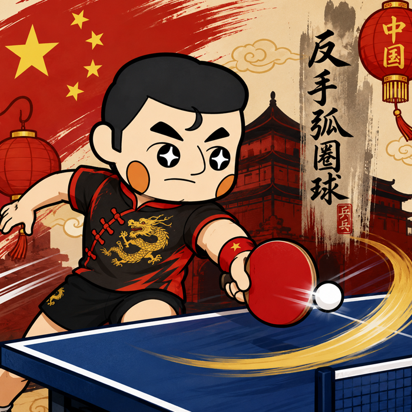

触れてみよう中国卓球
バックドライブ完全ガイド
一撃より、まずはループドライブから始めよう。
さすが、まずスピードドライブよりも歩く練習をしましょう納得ですね。
現在の卓球では、バックドライブは欠かせない技術の一つです。
ミドル・シニア層の方だと、まだまだバックハンドが苦手で現代卓球についていってない方も多いかと思います。
最近始められた学生さんや若い方は、顧問やコーチなどが比較的年齢が若く、現代卓球を取り入れてるかもしれません。
台から下がらず前陣をキープし、早い打点とコンパクトなスイングで両ハンドで攻める速攻型。
レシーブから全面チキータで待ち、高速バックハンドドライブでラリーに持ち込むバックハンド主戦型など
今の卓球を楽しむ、勝つための卓球をするどちらにしてもバックハンドが鍵となることが多い気がします！
こちらでは初心者の方が、悩むであろう壁から中級者からの上達ポイントまで解説してます。
まず、初心者の方は
- ネットを越えない
- オーバーミスになる
- 回転が掛からない
と悩むことも少なくありません。
中国の元プロ選手によると、初心者が最初から強いバックドライブを打とうとする必要はありません。
まずはループドライブで回転を掛ける感覚を身につけることが、上達への近道です。

スタンスは肩幅より少し広く
バックドライブでは、肩幅より少し広めに足を開きます。
初心者は、まず平行足のままで構いません。
慣れてきたら右足を少し前へ出すと、体がボールへ近づきやすくなり、自然と力も伝わりやすくなります。
また、つま先で軽く床をつかむように立つことで、安定した姿勢を作れます。
ラケットは必ずボールの下から出す
初心者が一番意識したいポイントは、ラケットを必ずボールの下から出すことです。
ラケットが高い位置にあると、下回転を持ち上げることが難しくなります。
また、ラケットとボールの距離が遠いと、タイミングが合いにくくなり、安定性も下がります。
初心者は、最初からラケットをボールの少し下で待つくらいで大丈夫です。
ボールのすぐ近くで準備し、小さなスイングで回転を掛ける意識を持ちましょう。
最初はループドライブがおすすめ
初心者は強打よりも、回転量を重視したループドライブから始めましょう。
ループドライブには、次のようなメリットがあります。
- ネットミスを減らしやすい
- 回転を掛ける感覚を覚えやすい
- 安定して台へ収めやすい
強い一撃は、基本が身についてからでも遅くありません。
ボールとの距離は近く保つ
ラケットとボールの距離が遠すぎると、威力は出しやすくなる一方で、安定性が下がります。
反対に、距離を近くすると威力は少し落ちますが、ボールを捉えやすくなります。
初心者のうちは、威力よりも安定を優先し、ボールの近くでコンパクトに振ることを意識しましょう。
打球点は頂点より少し後
おすすめの打球点は、ボールが頂点を過ぎて少し落ち始めたタイミングです。
早すぎると回転に負けやすく、遅すぎるとボールが沈みすぎて、持ち上げるのが難しくなります。
最初は無理をせず、少し落ち始めた位置で、回転を掛ける感覚を覚えましょう。
フリーハンドは自然に使う
左手、いわゆるフリーハンドは固定する必要はありません。
体のバランスを取るために自然に動かし、スイングの邪魔にならない位置で使います。
動物のしっぽのように、体が流れないようにバランスを取る役割だと考えると分かりやすいでしょう。
横下回転にはボールの内側を捉える
真ん中付近へ横下回転のボールが来た場合は、ボールの外側ではなく、少し内側を捉える意識を持つと入りやすくなります。
コンパクトなスイングでもコースを分かりにくくできるため、レシーブでも役立つ考え方です。
初心者がやりがちな失敗
初心者には、次のようなミスがよく見られます。
- ラケットの位置が高い
- ラケットとボールの距離が遠い
- バックスイングが大きすぎる
- 最初から強く打とうとする
まずはラケットを低く構え、ボールの近くから小さく回すことを意識しましょう。
一人でもできる練習方法
バックドライブは、一人でも感覚を練習できます。
- ボールを自分で軽くバウンドさせる
- ラケットをボールの下で待つ
- 手首とラケットヘッドを回して回転を掛ける
- ボールを前へ飛ばす
これを繰り返すことで、下から上へ持ち上げる動きと、回転を掛ける感覚を確認できます。
相手がいない日でもできる、初心者におすすめの練習方法です。
中級者になったら
基本が身についたら、次の要素を意識すると、さらに回転量と威力を高められます。
- 重心を低くする
- 足で床を蹴る
- 腹筋と背筋を使う
- 体全体でスイングする
ただし、腕だけを下げるのではなく、ラケットの位置を保ちながら重心を下げることがポイントです。
参考動画：RinRin卓球「初級者向け 対下回転バックドライブ解説」。 本記事は動画内容を初心者向けに要約・再構成しています。
まとめ
初心者が最初に目指すべきなのは、強いバックドライブではありません。
まずは、
- 肩幅より広く構える
- ラケットはボールの下から出す
- ボールとの距離を近く保つ
- ループドライブで回転を掛ける
- 頂点より少し後で打球する
この5つを意識するだけでも、バックドライブは大きく安定します。
強打を目指す前に、回転を掛ける感覚を身につける。
それが、バックドライブ上達への確かな第一歩です。
"Spin Before Power"